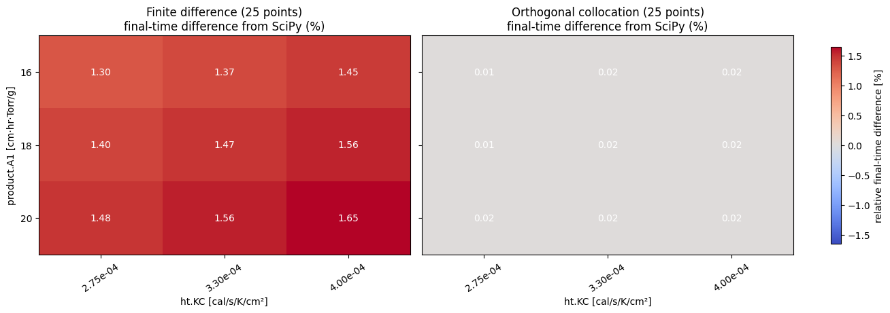
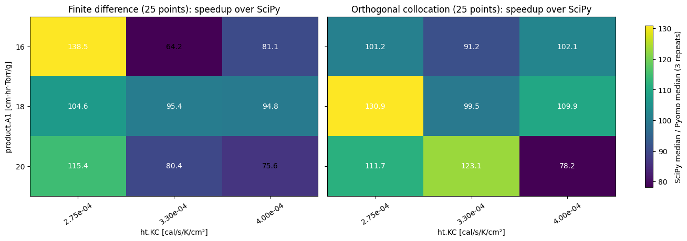
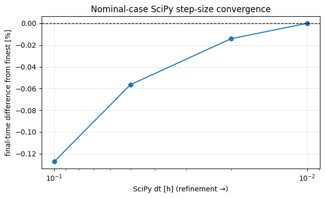
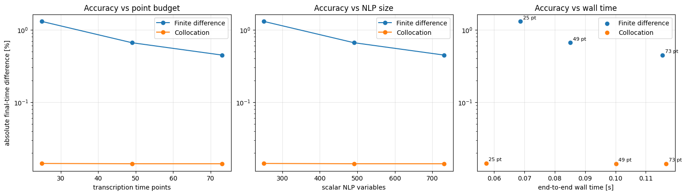
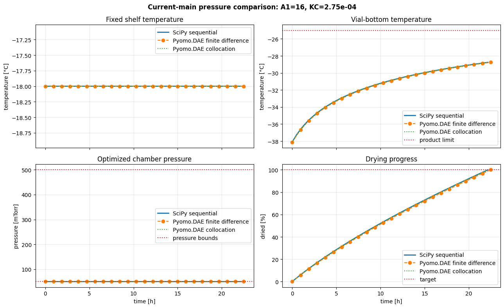

Compare the current SciPy and Pyomo chamber-pressure optimizers
This tutorial reproduces the historical \(A_1 \times K_C\) chamber-pressure experiment with the physics and APIs on current main. It compares the legacy sequential SciPy optimizer with an equivalent free-final-time Pyomo.DAE model transcribed by backward finite differences and LAGRANGE-RADAU orthogonal collocation. The headline DAE comparison gives both transformations the same number of transcription points.
What is held equivalent?
| SciPy workflow | Pyomo.DAE workflow |
|---|---|
| Sequentially minimize \(P_{ch}-P_{sub}\), maximizing rate at each cake state | Simultaneously minimize free final drying time |
| Advance the one cake-length ODE explicitly | Transcribe the same ODE with Pyomo.DAE |
| Stop at 100% dried | Constrain the terminal state to 100% dried |
| Fixed \(-18\,^{\circ}\)C shelf profile; chamber pressure bounded to 50–500 mTorr | The same fixed profile, control definition, and bounds |
With one monotone differential state and no intertemporal control penalty, maximizing sublimation rate at every state minimizes completion time. The comparison therefore uses final drying time as the common process objective. Finite differences and collocation are alternative algebraic reformulations of the same DAE, not different physical models.
Optional solver setup
Run this notebook from the repository root after installing the optional stack:
python -m pip install -e ".[dev,pyomo]"
idaes get-extensions --extra petsc
jupyter lab docs/examples/current_main_pressure_optimizer_comparison.ipynb
A conda-forge IPOPT installation can be used instead. The full default grid takes several minutes because every SciPy reference advances with the configured fine time step and timing is repeated.
# Papermill parameters: CI overrides these with a small smoke case.
a1_values = [16.0, 18.0, 20.0]
kc_values = [2.75e-4, 3.30e-4, 4.00e-4]
scipy_dt = 0.01
scipy_dt_values = [0.1, 0.05, 0.02, 0.01]
point_budget = 25
ncp = 3
final_dried_fraction = 1.0
timing_repeats = 3
sensitivity_point_budgets = [25, 49, 73]
constraint_tolerance = 1.0e-4
save_results = False
results_dir = "benchmarks/results/current_main_pch_comparison"
import json
import platform
import subprocess
from importlib.metadata import version
from pathlib import Path
import matplotlib
import matplotlib.pyplot as plt
import numpy as np
import pyomo
import scipy
from examples.current_main_pressure_optimizer_comparison import (
matched_nfe_for_point_budget,
run_case_comparison,
run_discretization_sensitivity,
run_pyomo_dae,
run_scipy_reference,
)
try:
git_revision = subprocess.check_output(
["git", "rev-parse", "HEAD"], text=True
).strip()
except (OSError, subprocess.CalledProcessError):
git_revision = "unavailable"
environment = {
"git_revision": git_revision,
"python": platform.python_version(),
"platform": platform.platform(),
"lyopronto": version("lyopronto"),
"numpy": np.__version__,
"scipy": scipy.__version__,
"pyomo": pyomo.__version__,
"matplotlib": matplotlib.__version__,
}
environment
{'git_revision': '01c8bf1e8c0787fa296eabd64de1eab4bdca7e05',
'python': '3.13.5',
'platform': 'Linux-6.6.114.1-microsoft-standard-WSL2-x86_64-with-glibc2.39',
'lyopronto': '1.1.0',
'numpy': '2.5.0',
'scipy': '1.17.1',
'pyomo': '6.9.5',
'matplotlib': '3.10.9'}
Experimental protocol
For each \((A_1, K_C)\) pair, the helper performs three equivalent runs:
- Run
opt_Pch.dryto 100% dried using the configured sequential step. - Solve the free-final-time Pyomo.DAE pressure model with
dae.finite_differenceand theBACKWARDscheme. - Solve the same model with
dae.collocationand theLAGRANGE-RADAUscheme. - Require every workflow to reach the same configured terminal dried fraction.
- Compare the final-time objectives directly and report median end-to-end wall times.
The default timing is a cold-start, workflow-level comparison: model construction and IPOPT solve are included, while an untimed warm-up removes one-time import and executable startup costs. Collocation uses nfe * ncp + 1 time points, whereas finite differences use nfe + 1. The helper chooses separate nfe values so both DAE transformations use point_budget time points. It also reports scalar-variable and active-constraint counts because equal point counts are only a first approximation to equal NLP size.
# Pay one-time Pyomo/IPOPT initialization before collecting timings.
for method in ("finite_difference", "collocation"):
warmup = run_pyomo_dae(
a1_values[0], kc_values[0], discretization=method, nfe=4, ncp=ncp
)
assert warmup.success, (method, warmup.solver_status, warmup.termination_condition)
finite_difference_nfe, collocation_nfe = matched_nfe_for_point_budget(point_budget, ncp)
print(
f"Matched DAE budget: {point_budget} points "
f"(FD nfe={finite_difference_nfe}; collocation nfe={collocation_nfe}, ncp={ncp})"
)
comparisons = []
for a1 in a1_values:
for kc in kc_values:
print(f"Running A1={a1:g}, KC={kc:.2e} ...")
comparisons.append(
run_case_comparison(
a1,
kc,
scipy_dt=scipy_dt,
finite_difference_nfe=finite_difference_nfe,
collocation_nfe=collocation_nfe,
ncp=ncp,
final_dried_fraction=final_dried_fraction,
timing_repeats=timing_repeats,
)
)
case_by_parameter = {(case.a1, case.kc): case for case in comparisons}
print(f"Completed {len(comparisons)} grid cases.")
header = (
f"{'A1':>5} {'KC':>10} {'method':>20} {'time [h]':>10} {'gap [%]':>10} "
f"{'wall [s]':>11} {'speedup':>10} {'points/steps':>12} "
f"{'variables':>10} {'constraints':>12} {'iterations':>11}"
)
print(header)
print("-" * len(header))
for case in comparisons:
print(
f"{case.a1:5.1f} {case.kc:10.2e} {'SciPy':>20} "
f"{case.scipy_objective_time_hr:10.4f} {0.0:10.3f} "
f"{case.scipy_wall_median_s:11.3f} {1.0:10.1f} "
f"{case.scipy_trajectory.shape[0]:12d} {'-':>10} {'-':>12} {'-':>11}"
)
rows = [
("finite difference", case.finite_difference_objective_time_hr, case.finite_difference_objective_gap_percent, case.finite_difference_wall_median_s, case.finite_difference_speedup, case.finite_difference_trajectory, case.finite_difference_n_variables, case.finite_difference_n_constraints, case.finite_difference_solver_iterations),
("collocation", case.collocation_objective_time_hr, case.collocation_objective_gap_percent, case.collocation_wall_median_s, case.collocation_speedup, case.collocation_trajectory, case.collocation_n_variables, case.collocation_n_constraints, case.collocation_solver_iterations),
]
for method, objective, gap, wall, speedup, table, nvars, ncons, iterations in rows:
iteration_text = "-" if iterations is None else str(iterations)
print(
f"{case.a1:5.1f} {case.kc:10.2e} {method:>20} {objective:10.4f} "
f"{gap:10.3f} {wall:11.3f} {speedup:10.1f} "
f"{table.shape[0]:12d} {nvars:10d} {ncons:12d} {iteration_text:>11}"
)
A1 KC method time [h] gap [%] wall [s] speedup points/steps variables constraints iterations
-----------------------------------------------------------------------------------------------------------------------------------
16.0 2.75e-04 SciPy 22.1878 0.000 6.780 1.0 2220 - - -
16.0 2.75e-04 finite difference 22.4768 1.302 0.049 138.5 25 251 252 -
16.0 2.75e-04 collocation 22.1910 0.014 0.067 101.2 25 251 252 -
16.0 3.30e-04 SciPy 20.0926 0.000 5.596 1.0 2011 - - -
16.0 3.30e-04 finite difference 20.3686 1.374 0.087 64.2 25 251 252 -
16.0 3.30e-04 collocation 20.0959 0.017 0.061 91.2 25 251 252 -
16.0 4.00e-04 SciPy 18.1249 0.000 5.011 1.0 1814 - - -
16.0 4.00e-04 finite difference 18.3881 1.453 0.062 81.1 25 251 252 -
16.0 4.00e-04 collocation 18.1284 0.019 0.049 102.1 25 251 252 -
18.0 2.75e-04 SciPy 22.9401 0.000 6.944 1.0 2296 - - -
18.0 2.75e-04 finite difference 23.2604 1.396 0.066 104.6 25 251 252 -
18.0 2.75e-04 collocation 22.9436 0.015 0.053 130.9 25 251 252 -
18.0 3.30e-04 SciPy 20.8129 0.000 5.888 1.0 2083 - - -
18.0 3.30e-04 finite difference 21.1193 1.472 0.062 95.4 25 251 252 -
18.0 3.30e-04 collocation 20.8165 0.017 0.059 99.5 25 251 252 -
18.0 4.00e-04 SciPy 18.8140 0.000 5.156 1.0 1883 - - -
18.0 4.00e-04 finite difference 19.1067 1.556 0.054 94.8 25 251 252 -
18.0 4.00e-04 collocation 18.8178 0.020 0.047 109.9 25 251 252 -
20.0 2.75e-04 SciPy 23.6736 0.000 7.243 1.0 2369 - - -
20.0 2.75e-04 finite difference 24.0246 1.483 0.063 115.4 25 251 252 -
20.0 2.75e-04 collocation 23.6773 0.015 0.065 111.7 25 251 252 -
20.0 3.30e-04 SciPy 21.5161 0.000 6.040 1.0 2153 - - -
20.0 3.30e-04 finite difference 21.8524 1.563 0.075 80.4 25 251 252 -
20.0 3.30e-04 collocation 21.5199 0.018 0.049 123.1 25 251 252 -
20.0 4.00e-04 SciPy 19.4877 0.000 5.221 1.0 1950 - - -
20.0 4.00e-04 finite difference 19.8094 1.651 0.069 75.6 25 251 252 -
20.0 4.00e-04 collocation 19.4918 0.021 0.067 78.2 25 251 252 -
Validate before interpreting
A solver's optimal termination is not sufficient by itself. The experiment also checks the final drying target, finite seven-column outputs, the product-temperature limit, and current Pyomo constraint residuals. Legacy output pressure remains in mTorr and percent dried remains on a 0–100 scale.
for case in comparisons:
assert case.scipy_trajectory.shape[1] == 7
assert case.finite_difference_trajectory.shape == (point_budget, 7)
assert case.collocation_trajectory.shape == (point_budget, 7)
assert np.all(np.isfinite(case.scipy_trajectory))
assert np.all(np.isfinite(case.finite_difference_trajectory))
assert np.all(np.isfinite(case.collocation_trajectory))
for table in (case.finite_difference_trajectory, case.collocation_trajectory):
assert table[-1, 6] >= 100.0 * final_dried_fraction - 1.0e-3
assert np.max(table[:, 2]) <= -25.0 + 1.0e-4
assert case.finite_difference_max_constraint_violation <= constraint_tolerance
assert case.collocation_max_constraint_violation <= constraint_tolerance
print("All grid cases satisfy the experiment acceptance checks.")
def matrix_for(attribute):
return np.array(
[
[getattr(case_by_parameter[(float(a1), float(kc))], attribute) for kc in kc_values]
for a1 in a1_values
],
dtype=float,
)
def annotate_heatmap(ax, values, fmt):
threshold = 0.55 * np.nanmax(np.abs(values))
for row in range(values.shape[0]):
for col in range(values.shape[1]):
color = "white" if abs(values[row, col]) > threshold else "black"
ax.text(col, row, format(values[row, col], fmt), ha="center", va="center", color=color)
objective_gap_matrices = [
("Finite difference", matrix_for("finite_difference_objective_gap_percent")),
("Orthogonal collocation", matrix_for("collocation_objective_gap_percent")),
]
limit = max(1.0, max(float(np.max(np.abs(values))) for _, values in objective_gap_matrices))
fig, axes = plt.subplots(1, 2, figsize=(13, 4.5), sharey=True, layout="constrained")
for ax, (label, values) in zip(axes, objective_gap_matrices):
image = ax.imshow(values, cmap="coolwarm", vmin=-limit, vmax=limit, aspect="auto")
ax.set(title=f"{label} ({point_budget} points)\nfinal-time difference from SciPy (%)", xlabel="ht.KC [cal/s/K/cm²]")
ax.set_xticks(range(len(kc_values)), [f"{value:.2e}" for value in kc_values], rotation=35)
ax.set_yticks(range(len(a1_values)), [f"{value:g}" for value in a1_values])
annotate_heatmap(ax, values, ".2f")
axes[0].set_ylabel("product.A1 [cm·hr·Torr/g]")
fig.colorbar(image, ax=axes, label="relative final-time difference [%]", shrink=0.9)
plt.show()

speedup_matrices = [
("Finite difference", matrix_for("finite_difference_speedup")),
("Orthogonal collocation", matrix_for("collocation_speedup")),
]
fig, axes = plt.subplots(1, 2, figsize=(13, 4.5), sharey=True, layout="constrained")
for ax, (label, values) in zip(axes, speedup_matrices):
image = ax.imshow(values, cmap="viridis", aspect="auto")
ax.set(title=f"{label} ({point_budget} points): speedup over SciPy", xlabel="ht.KC [cal/s/K/cm²]")
ax.set_xticks(range(len(kc_values)), [f"{value:.2e}" for value in kc_values], rotation=35)
ax.set_yticks(range(len(a1_values)), [f"{value:g}" for value in a1_values])
annotate_heatmap(ax, values, ".1f")
axes[0].set_ylabel("product.A1 [cm·hr·Torr/g]")
fig.colorbar(image, ax=axes, label=f"SciPy median / Pyomo median ({timing_repeats} repeats)", shrink=0.9)
plt.show()

The speedup values are machine- and environment-dependent. They also scale roughly with \(1/\mathtt{scipy\_dt}\) because opt_Pch.dry performs one SLSQP solve per sequential step, while changing scipy_dt does not change the DAE workload. The SciPy step count and the simultaneous NLP point count are therefore reported but are not equivalent measures of problem size. The configured scipy_dt is the finest step in the convergence study below and is chosen for reference accuracy, so timings should be interpreted together with the step size, NLP sizes, and timing repeats rather than used as regression-test thresholds. The objective gaps and physical acceptance checks are the more portable numerical results.
For this fixed \(-18\,^{\circ}\)C shelf profile, the optimized chamber pressure is at or very near the 50 mTorr lower bound throughout the grid. That agreement is a result, not an extra constraint: lower pressure supplies the best net sublimation driving force in this operating regime while the product-temperature and equipment-capability constraints remain feasible.
SciPy step-size convergence
SciPy is a sequential optimizer/integrator, not a simultaneous transcription, so its number of steps should not be matched to the DAE point budget. Instead, this study quantifies the final-time reference's sensitivity to dt. The configured grid reference must be the finest value listed here. Differences comparable to the change between the two finest steps should be interpreted as within the SciPy reference resolution, not as meaningful method bias.
nominal = case_by_parameter[(float(a1_values[0]), float(kc_values[0]))]
scipy_dt_values = sorted({float(value) for value in scipy_dt_values}, reverse=True)
assert all(value > 0.0 for value in scipy_dt_values)
assert np.isclose(scipy_dt, min(scipy_dt_values))
scipy_convergence_rows = []
for dt in scipy_dt_values:
if np.isclose(dt, scipy_dt):
objective_time_hr = nominal.scipy_objective_time_hr
wall_time_s = nominal.scipy_wall_median_s
n_steps = nominal.scipy_trajectory.shape[0]
else:
run = run_scipy_reference(nominal.a1, nominal.kc, dt=dt)
assert run.success
objective_time_hr = run.objective_time_hr
wall_time_s = run.wall_time_s
n_steps = run.n_time_points
scipy_convergence_rows.append({
"dt": dt, "objective_time_hr": objective_time_hr,
"wall_time_s": wall_time_s, "n_steps": n_steps,
})
finest_time = scipy_convergence_rows[-1]["objective_time_hr"]
for row in scipy_convergence_rows:
row["gap_from_finest_percent"] = (
100.0 * (row["objective_time_hr"] - finest_time) / finest_time
)
print(f"{'dt [h]':>10} {'steps':>8} {'time [h]':>12} {'gap from finest [%]':>21} {'wall [s]':>10}")
for row in scipy_convergence_rows:
print(
f"{row['dt']:10.4f} {row['n_steps']:8d} {row['objective_time_hr']:12.5f} "
f"{row['gap_from_finest_percent']:21.4f} {row['wall_time_s']:10.3f}"
)
fig, ax = plt.subplots(figsize=(6.5, 4.0))
ax.plot(
[row["dt"] for row in scipy_convergence_rows],
[row["gap_from_finest_percent"] for row in scipy_convergence_rows],
marker="o",
)
ax.axhline(0.0, color="black", linewidth=1.0, linestyle="--")
ax.set_xscale("log")
ax.invert_xaxis()
ax.set(xlabel="SciPy dt [h] (refinement →)", ylabel="final-time difference from finest [%]", title="Nominal-case SciPy step-size convergence")
ax.grid(alpha=0.3)
fig.tight_layout()
plt.show()
dt [h] steps time [h] gap from finest [%] wall [s]
0.1000 223 22.15955 -0.1274 0.699
0.0500 445 22.17527 -0.0565 1.350
0.0200 1111 22.18468 -0.0141 3.373
0.0100 2220 22.18781 0.0000 6.780

DAE transcription sensitivity
The two transformations have different approximation orders and therefore should not be compared at the same nfe. Each pair below uses exactly the same number of transcription points: finite differences use point_budget - 1 elements, while collocation uses (point_budget - 1) / ncp. The plots show accuracy against point count, scalar NLP variables, and end-to-end wall time.
nominal = case_by_parameter[(float(a1_values[0]), float(kc_values[0]))]
sensitivity_rows = run_discretization_sensitivity(
nominal.a1,
nominal.kc,
nominal.scipy_trajectory,
point_budgets=sensitivity_point_budgets,
ncp=ncp,
final_dried_fraction=final_dried_fraction,
)
print(
f"{'method':>20} {'nfe':>6} {'points':>7} {'variables':>10} {'constraints':>12} "
f"{'iterations':>11} {'objective gap [%]':>18} {'wall [s]':>10} {'max residual':>14}"
)
for row in sensitivity_rows:
iteration_text = "-" if row["solver_iterations"] is None else str(row["solver_iterations"])
print(
f"{row['method']:>20} {row['nfe']:6d} {row['n_time_points']:7d} "
f"{row['n_variables']:10d} {row['n_constraints']:12d} {iteration_text:>11} "
f"{row['objective_gap_percent']:18.3f} {row['wall_time_s']:10.3f} "
f"{row['max_constraint_violation']:14.3e}"
)
fig, axes = plt.subplots(1, 3, figsize=(15, 4.2), layout="constrained")
for method, label in [("finite_difference", "Finite difference"), ("collocation", "Collocation")]:
rows = [row for row in sensitivity_rows if row["method"] == method]
error = [max(abs(row["objective_gap_percent"]), 1.0e-6) for row in rows]
axes[0].plot([row["n_time_points"] for row in rows], error, marker="o", label=label)
axes[1].plot([row["n_variables"] for row in rows], error, marker="o", label=label)
axes[2].scatter([row["wall_time_s"] for row in rows], error, label=label)
for row, value in zip(rows, error):
axes[2].annotate(f"{row['n_time_points']} pt", (row["wall_time_s"], value), xytext=(4, 4), textcoords="offset points", fontsize=8)
axes[0].set(xlabel="transcription time points", ylabel="absolute final-time difference [%]", title="Accuracy vs point budget")
axes[1].set(xlabel="scalar NLP variables", title="Accuracy vs NLP size")
axes[2].set(xlabel="end-to-end wall time [s]", title="Accuracy vs wall time")
for ax in axes:
ax.set_yscale("log")
ax.grid(alpha=0.3)
ax.legend()
plt.show()
method nfe points variables constraints iterations objective gap [%] wall [s] max residual
finite_difference 24 25 251 252 - 1.302 0.069 9.991e-09
collocation 8 25 251 252 - 0.014 0.057 9.991e-09
finite_difference 48 49 491 492 - 0.662 0.085 2.234e-08
collocation 16 49 491 492 - 0.014 0.100 2.188e-08
finite_difference 72 73 731 732 - 0.447 0.116 9.994e-09
collocation 24 73 731 732 - 0.014 0.117 3.309e-08

Nominal trajectory comparison
All three results retain the legacy seven-column output shape. Pressure is plotted from column 4 in mTorr and drying progress from column 6 on the 0–100 percent scale. Every method uses the same terminal drying target, fixed shelf temperature, and chamber-pressure bounds.
A control value at the isolated \(t=0\) DAE node has zero measure in the final-time objective. The pressure model therefore constrains that endpoint to equal the first positive-time pressure value. This selects the control's right-limit representative in the raw result itself and prevents the arbitrary initial pressure and temperature jump seen in the historical plot; no display-only smoothing is applied below.
scipy_table = nominal.scipy_trajectory
finite_difference_table = nominal.finite_difference_trajectory
collocation_table = nominal.collocation_trajectory
fig, axes = plt.subplots(2, 2, figsize=(13, 8), sharex=True)
for table, label, style in [
(scipy_table, "SciPy sequential", {"linewidth": 2.0}),
(finite_difference_table, "Pyomo.DAE finite difference", {"linestyle": "--", "marker": "o"}),
(collocation_table, "Pyomo.DAE collocation", {"linestyle": ":"}),
]:
axes[0, 0].plot(table[:, 0], table[:, 3], label=label, **style)
axes[0, 1].plot(table[:, 0], table[:, 2], label=label, **style)
axes[1, 0].plot(table[:, 0], table[:, 4], label=label, **style)
axes[1, 1].plot(table[:, 0], table[:, 6], label=label, **style)
axes[0, 0].set(title="Fixed shelf temperature", ylabel="temperature [°C]")
axes[0, 1].set(title="Vial-bottom temperature", ylabel="temperature [°C]")
axes[0, 1].axhline(-25.0, color="tab:red", linestyle=":", label="product limit")
axes[1, 0].set(title="Optimized chamber pressure", xlabel="time [h]", ylabel="pressure [mTorr]")
axes[1, 0].axhline(50.0, color="tab:red", linestyle=":", label="pressure bounds")
axes[1, 0].axhline(500.0, color="tab:red", linestyle=":")
axes[1, 1].set(title="Drying progress", xlabel="time [h]", ylabel="dried [%]")
axes[1, 1].axhline(100.0 * final_dried_fraction, color="tab:red", linestyle=":", label="target")
for ax in axes.flat:
ax.grid(alpha=0.3)
ax.legend()
fig.suptitle(f"Current-main pressure comparison: A1={nominal.a1:g}, KC={nominal.kc:.2e}", fontweight="bold")
fig.tight_layout()
plt.show()

Optionally save a compact reproduction record
Generated experiment outputs belong under benchmarks/results/, which is ignored by default. The JSON file contains environment and scalar summaries; the compressed NumPy archive retains every trajectory used for the plots.
if save_results:
destination = Path(results_dir)
destination.mkdir(parents=True, exist_ok=True)
summaries = [
{
"A1": case.a1,
"KC": case.kc,
"scipy_objective_time_hr": case.scipy_objective_time_hr,
"finite_difference_objective_time_hr": case.finite_difference_objective_time_hr,
"collocation_objective_time_hr": case.collocation_objective_time_hr,
"finite_difference_objective_gap_percent": case.finite_difference_objective_gap_percent,
"collocation_objective_gap_percent": case.collocation_objective_gap_percent,
"scipy_wall_times_s": list(case.scipy_wall_times_s),
"finite_difference_wall_times_s": list(case.finite_difference_wall_times_s),
"collocation_wall_times_s": list(case.collocation_wall_times_s),
"finite_difference_speedup": case.finite_difference_speedup,
"collocation_speedup": case.collocation_speedup,
"finite_difference_n_variables": case.finite_difference_n_variables,
"finite_difference_n_constraints": case.finite_difference_n_constraints,
"finite_difference_solver_iterations": case.finite_difference_solver_iterations,
"collocation_n_variables": case.collocation_n_variables,
"collocation_n_constraints": case.collocation_n_constraints,
"collocation_solver_iterations": case.collocation_solver_iterations,
"finite_difference_max_constraint_violation": case.finite_difference_max_constraint_violation,
"collocation_max_constraint_violation": case.collocation_max_constraint_violation,
}
for case in comparisons
]
(destination / "summary.json").write_text(
json.dumps({"environment": environment, "parameters": {
"scipy_dt": scipy_dt, "scipy_dt_values": scipy_dt_values,
"point_budget": point_budget,
"finite_difference_nfe": finite_difference_nfe,
"collocation_nfe": collocation_nfe, "ncp": ncp,
"final_dried_fraction": final_dried_fraction,
"timing_repeats": timing_repeats,
}, "cases": summaries, "scipy_convergence": scipy_convergence_rows,
"discretization_sensitivity": sensitivity_rows}, indent=2) + "\n"
)
trajectories = {}
for case in comparisons:
key = f"A1_{case.a1:g}_KC_{case.kc:.2e}".replace(".", "p").replace("-", "m")
trajectories[f"{key}_scipy"] = case.scipy_trajectory
trajectories[f"{key}_finite_difference"] = case.finite_difference_trajectory
trajectories[f"{key}_collocation"] = case.collocation_trajectory
np.savez_compressed(destination / "trajectories.npz", **trajectories)
print(f"Saved reproduction record under {destination}")
else:
print("Set save_results=True to write JSON and NPZ outputs.")
Interpretation boundaries
This notebook reproduces the scientific question with current code rather than preserving historical outputs as golden numbers. Agreement is judged using the common final-time objective, transcription trend, trajectory shape, identical terminal target, pressure bounds, product-temperature limit, and constraint residuals together. Exact speedups are machine-dependent. A changing fixed-shelf schedule is intentionally outside this free-final-time formulation because its switch times require an explicit real-time parameterization shared by both workflows.